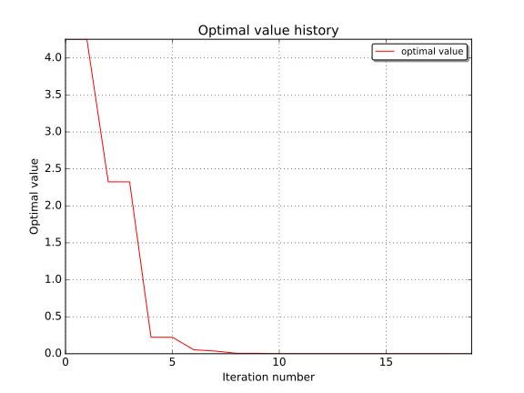

EGO algorithm usage examples¶
[1]:
from __future__ import print_function
import openturns as ot
import math as m
import openturns.testing
#ot.Log.Show(ot.Log.INFO)
ot.TBB.Disable()
The EGO algorithm [jones1998]_ is an adaptative optimization method based on kriging.
An initial design of experiment is used to build a first metamodel. At each iteration a new point that maximizes a criterion is chosen as optimizer candidate.
The criterion uses a tradeoff between the metamodel value and the conditional variance.
Then the new point is evaluated using the original model and the metamodel is relearnt on the extended design of experiment.
E.I. formulation: Ackley test-case¶
[2]:
# ackley 2-d
ot.RandomGenerator.SetSeed(0)
dim = 2
# model
def ackley(X):
a = 20.0
b = 0.2
c = 2.0 * m.pi
d = len(X)
f = -a * m.exp(-b*m.sqrt(sum(x**2 for x in X)/d)) - m.exp(sum(m.cos(c*x) for x in X)/d) + a + m.exp(1.0)
#print(X, f)
return [f]
model = ot.PythonFunction(dim, 1, ackley)
# problem
problem = ot.OptimizationProblem()
problem.setObjective(model)
bounds = ot.Interval([-15.0] * dim, [15.0] * dim)
problem.setBounds(bounds)
# design
center = [0.5] * dim
levels = [2.0, 4.0, 8.0, 14.0]
experiment = ot.Factorial(center, levels)
inputSample = experiment.generate()
outputSample = model(inputSample)
# first kriging model
covarianceModel = ot.SquaredExponential([2.50057] * dim, [0.1])
basis = ot.ConstantBasisFactory(dim).build()
kriging = ot.KrigingAlgorithm(inputSample, outputSample, covarianceModel, basis)
kriging.run()
# algo
algo = ot.EfficientGlobalOptimization(problem, kriging.getResult())
#solver = ot.NLopt('GN_ESCH')
##solver = ot.NLopt('GN_MLSL')
algo.setMaximumEvaluationNumber(5)
algo.setMaximumAbsoluteError(1e-10)
algo.setMaximumRelativeError(1e-10)
algo.setMaximumResidualError(1e-10)
algo.setMaximumConstraintError(1e-10)
algo.setMultiStartExperimentSize(100) # number of multistart candidates improvement optim
algo.setMultiStartNumber(20) # number of multistart points for improvement optim
algo.setParameterEstimationPeriod(1) # relearn kriging parameters every X iteration
algo.setImprovementFactor(1.0) # improvement stopping criterion factor
algo.setCorrelationLengthFactor(1.0) # correlation length stopping criterion factor
algo.run()
result = algo.getResult()
#print('1st pass result=', result)
print('iteration=', result.getIterationNumber())
#print(result.getInputSample())
#print(result.getOutputSample())
# local refinement
algo2 = ot.NLopt(problem, 'LD_LBFGS')
algo2.setStartingPoint(result.getOptimalPoint())
algo2.run()
result = algo2.getResult()
result.drawOptimalValueHistory()
iteration= 15
[2]:

AIE formulation: Branin test-case¶
This time the AEI formulation is used, the objective output should be 2-d with the noise variance.
Here we assume a constant noise variance:
[3]:
# branin
dim = 2
# model
branin = ot.SymbolicFunction(['x1', 'x2'], ['((x2-(5.1/(4*pi_^2))*x1^2+5*x1/pi_-6)^2+10*(1-1/8*pi_)*cos(x1)+10-54.8104)/51.9496', '0.96'])
transfo = ot.SymbolicFunction(['u1', 'u2'], ['15*u1-5', '15*u2'])
model = ot.ComposedFunction(branin, transfo)
# problem
problem = ot.OptimizationProblem()
problem.setObjective(model)
bounds = ot.Interval([0.0] * dim, [1.0] * dim)
problem.setBounds(bounds)
# design
experiment = ot.Box([1, 1])
inputSample = experiment.generate()
modelEval = model(inputSample)
outputSample = modelEval.getMarginal(0)
# first kriging model
covarianceModel = ot.SquaredExponential([0.3007, 0.2483], [0.981959])
basis = ot.ConstantBasisFactory(dim).build()
kriging = ot.KrigingAlgorithm(inputSample, outputSample, covarianceModel, basis)
noise = [x[1] for x in modelEval]
kriging.setNoise(noise)
kriging.run()
# algo
algo = ot.EfficientGlobalOptimization(problem, kriging.getResult())
algo.setNoiseModel(ot.SymbolicFunction(['x1', 'x2'], ['0.96'])) # assume constant noise var
algo.setMaximumEvaluationNumber(5)
algo.setImprovementFactor(0.05) # stop whe improvement is < a% the current optimum
algo.setAEITradeoff(0.66744898)
algo.run()
result = algo.getResult()
#print('1st pass result=', result)
print('iteration=', result.getIterationNumber())
#print(result.getInputSample())
#print(result.getOutputSample())
iteration= 7
[3]: